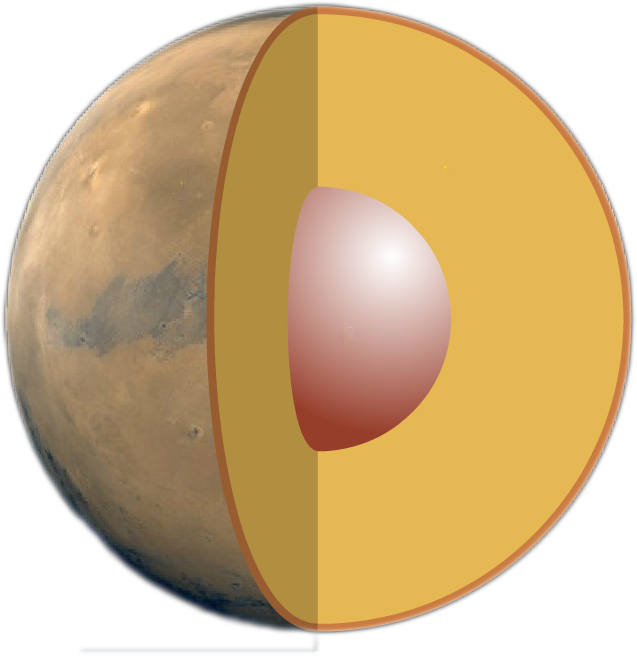

| HOMEPAGE | SISTEMA SOLARE | CORPI CELESTI | ||
| HOMEPAGE | SISTEMA SOLARE | CORPI CELESTI | ||
| paramentri orbitali | |
| semiasse maggiore | 227 936 637 km 1,52366231 UA |
| periodo orbitale | 686,9600 giorni (1,8808 anni) |
| perdiodo sinodico | 779,96 giorni (2,135 anni) |
| Velocità orbitale |
21,972 km/s (min) 24,077 km/s (media) 26,499 km/s (max) |
| satelliti | 2 |
| anelli | 0 |
| dati fisici | |
| diametro equatoriale | 6804,9 km | superficie | 1,448 x 1014 m2 |
| velocità di rotazione | 241,17 m/s |
| temperatura | 133 K (-63 °C) |
il pianeta rosso
Marte è il quarto pianeta in ordine di distanza dal Sole e il settimo, per dimensioni, del Sistema solare, con un diametro pari a circa la metà di quello della Terra. Insieme a Mercurio e Venere, fa parte di quei pianeti rocciosi denominati terrestri. Marte ha una densità leggermente inferiore a quella della Terra e una superficie che presenta conformazioni simili a quelle del nostro pianeta, con pianure, vulcani, montagne e canyon, oltre a due calotte polari. La superficie marziana è tuttavia più ricca di crateri ed è ricoperta da una fine polvere rossastra, dovuta ai minerali di ferro presenti nel suolo. Marte è anche detto, per questo, il pianeta rosso. Ha due satelliti, Deimos e Phobos, ma è sprovvisto di un sistema di anelli.
La velocità di rotazione di Marte attorno al proprio asse è molto vicina a quella della Terra, pertanto la durata del giorno marziano, intesa come insieme del dì e della notte, è quasi uguale a quella del giorno terrestre. Anche l'angolo di inclinazione dell'asse e la distanza dal sole, per i due pianeti, sono simili, così che il loro ciclo stagionale risulta.
La forza di gravità del pianeta è pari al 38% di quella terrestre.
L'atmosfera del pianeta è costituita prevalentemente da anidride carbonica ed è piuttosto rarefatta, tuttavia essa risulta sufficientemente densa da consentire un sistema meteorologico con nuvole e venti. Su tutto il pianeta si verificano inoltre tempeste di sabbia, anche di straordinaria intensità. La pressione atmosferica media è più di cento volte più bassa di quella della Terra, ma varia molto più intensamente, rispetto al nostro pianeta, con l'altitudine, le condizioni meteorologiche e soprattutto con l'alternarsi delle stagioni.
Marte possiede un debole campo magnetico, presente su vaste aree del pianeta, ma che non si estende a tutta la sua superficie; esso rappresenta probabilmente ciò che resta di un antico campo su scala globale, ora scomparso.
curiosità
 Nel 1976 la sonda spaziale Viking 1, in orbita attorno al pianeta, scattò la foto di una porzione della superficie di Marte, nella regione denomina Cydonia, nella quale compare una particolare conformazione rocciosa (di circa 3 x 1,5 km) che ricorda le sembianze di un volto umano. Tra le diverse interpretazioni della foto, ve ne fu una che sosteneva si trattasse di qualche sorta di monumento artificiale costruito da antiche forme di vita intelligenti che visitarono o abitarono Marte in passato.elementi chimici esenziali
Carbonio, ossigeno, idrogeno ed azoto che costituiscono la base del materiale organico ; è disponibile una fonte di energia utilizzabile dagli organismi viventi (l'energia solare o il calore del sottosuolo); è infine possibile la presenza dell'acqua allo stato liquido. Oggi l'acqua esiste con certezza allo stato solido all'interno delle calotte polari, ma potrebbe essere presente anche nel sottosuolo, riscaldata dal calore interno del pianeta; essa è comunque esistita in passato, come risulta dalle evidenti tracce lasciate sulla attuale conformazione del suolo.